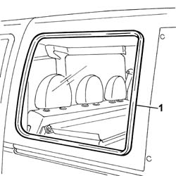

7035D18 l/h or r/h side opening window seal - replace
- Path
- Procedures > 70 FITTINGS > 7035 BODYSHELL WINDOWS > 7035D passenger compartment side opening windows > 7035D18 l/h or r/h side opening window seal - replace
- Kind
- repair procedure (removal / refitting; the operation number is the code)
- Applies to
- all engines; all production periods
- Interactive page
- https://sloeber94.github.io/elrnDB-fDbl/en/#/2585129
Applies to: all engines; all production periods; only with equipment: Doblò trim level
 Removing
Removing
 Refitting
RefittingOp. 7035D10 L/H OR R/H SIDE OPENING WINDOW (ONE) - R+R INCLUDES R+R OF OPENING/CLOSING DEVICE
1. Remove the seal from its housing.

Applies to: all engines; all production periods; only with equipment: Doblò trim level
Refitting
RemovingCheck that the seal shows no signs of cracks or cuts.
If this is not the case, replace the seal.
Fit the seal in its housing, checking that it adheres perfectly to the bodyshell flanging.